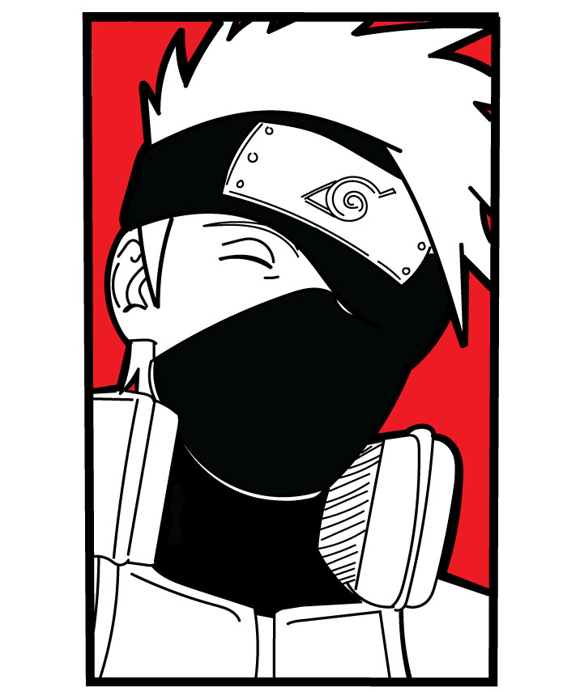

Challenge:
Lab 15 tasked us to experiment with new "fancy" css such as gradients, shadows, rounded edges, and object fit in order to learn more cool ways to style our pages.
We added shadows to our text, images that we reshaped and "object fitted" as well as use a cool gradient as a background.
Problems:
We actually barely ran into issues this lab, we really only struggled with gradients but found a solution to select the whole doc with the html selector which allowed us to create a good looking background.
Results:
We added shadows to the body text, gave our headers a 3d effect with shadows and fit our images into a rounded frames that we resized without altering the dimensions.
Finally I gave my picture a grayscale filter and all together really happy how my page came out.
